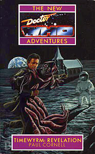

|
Timewyrm: Revelation
|
BASIC PLOT DOCTOR Pg 49 "It was an old man, his silver hair swept back. Yeah, he looked like a librarian as well in his red robes, peering at her down his long, hawklike nose." The First Doctor. Pg 122 "In it sat a man with a shock of white hair, his arms manacled to those of the chair. He wore a simple white smock and his mouth was covered by a strip of adhesive tape." The Third Doctor. Pg 147 "His scarf looped around his two passengers in a multicoloured spiral" The fourth Doctor. Pg 190 "And there was somebody tied to the thing." The Fifth Doctor, crucified. COMPANIONS Pg 108 "It was a young girl in a frail classical gown." Katarina. Pg 109 "She was dressed in a smart tunic and carried a gun at her hip." Sara Kingdom. "He had a mop of black hair, and wore a yellow smock, but as he ran towards the Doctor, his clothes burst into flame, his skin scalded, and explosions of fleshy ash burst from his form, sending him spiralling towards the Doctor's feet, a living volcano." Adric. MATERIALISATION CIRCUIT Pg 33 The Lacus Somnorium, on the earthside of the moon. Pg 64 On the Lunar surface. Pg 200 An arena inside the Doctor's mind. Pg 209 Inside St. Christopher's church, on the moon. Pg 216 A genetics lab in the 22nd century. Near St Christopher's church, Cheldon Bonniface, the Sunday before Christmas 1992. Ladbroke Grove hypertube station or nearby (page 95 reveals it as 2018). Pgs 216/217 Near St Benedict's school, c 1980. Pg 217 Greenwich Park, 1976. PREPARATORY READING CONTINUITY REFERENCES "They say that no two snowflakes are the same. But nobody ever stops to check. Above the Academy blew great billows of them, whipping around the corners of the dark building as if to emphasize the structure's harsh lines" This is very similar to the opening sentence of The Infinity Doctors. "Mount Cadon, Gallifrey's highest peak, extended to the fringes of the planet's atmosphere, and the Prydonian Academy stood far up its slopes." Mount Cadon is mentioned in The Infinity Doctors and Lucifer Rising (pg 332). "The bloom was a tiny, yellow blossom, sheltering in a crack in the grey-green mountainside." This is, one presumes, the daisiest daisy mentioned in The Time Monster. Indeed, it is confirmed as a daisy (or a rose or a daffodil, but also a 'sarlain'; confused? - you will be) on the very next page. Pg 4 Reference to Mel. Pg 10 "The room reacted to her wakening, brightening slightly so that she could see every corner." This is consistent with the way the TARDIS rooms behave in Timewyrm: Genesys. Pg 10 "Ace was in her early twenties" This fits in with Cat's Cradle: Warhead, where it's implied that Ace is 22. But see Continuity Cock-Ups. Pg 11 Reference to the TARDIS swimming pool, which was mentioned in Timewyrm: Genesys. Pg 12 "They had only just left Kirith" Timewyrm: Apocalypse. The Doctor's nightmares and locking himself in his room at night is part of the New Adventures interpretation of his moodiness and his relationship with the Sixth Doctor and the Valeyard; 'The Room With No Doors' explained that the Seventh Doctor fears being locked, by his other personas, inside a room with no doors in his mind along with his nightmares, after he regenerates. Pg 13 "They had sat and meditated on the Eye of Orion." The Five Doctors. Pg 15 'I remember Sherlock Holmes expressing similar sentiments.' 'Yeah?' Ace was interested. 'Did you meet him? Oh, right, he wasn't real, was he?' 'Just because somebody isn't real, it doesn't mean you can't meet them,' murmured the Doctor with a sly smile." Later on, All-Consuming Fire includes the first time Sherlock Holmes meets the Doctor. It isn't necessarily the first time the Doctor's met Holmes, though. Pg 16 "The painted sign that creaked outside named it as the Black Swan." Another Black Swan appears in Cat's Cradle: Witch Mark. Pg 17 There's a brief reference to the fifth Doctor as a 'young lad' who is "still playing his cricket". Pg 18 "Well then, who's for a sing-song?" In Timewyrm: Genesys Ace led a sing-song in a pub in Mesopotamia. In The Happiness Patrol she had said she was tone-deaf. "'Not against a worthwhile opponent,' the Time Lord replied, allowing himself slight relish." The Curse of Fenric. Pgs 25-26 "There was something awfully familiar about the spacesuit that the creatures wore. It was exactly the same as the ones that the Doctor had showed her at the dusty end of the TARDIS wardrobe room." Previously seen in The Moonbase, in which they looked nothing like the one Chad's wearing on the front cover. "Oh shame." Brigadier Bambera's expression from Battlefield. Pg 28 "To see a world in a grain of sand / And a heaven in a wild flower. / Hold infinity in the palm of your hand / And eternity in an hour." The quote is from William Blake, whom the Doctor will go on to meet in just a few books' time (The Pit). Pg 30 "'But there wasn't room,' cried out Brigid, the tinker's wife, hysterically. 'That thing couldn't fit inside his head.'" Notwithstanding the Doctor's explanation that 'perceptions are being played with', this is so reminiscent of the only real problem with City of Death that the similarity must be deliberate. "He popped open a pocket on his suit, and pulled out a tiny, mechanical creature. Resembling a spider, it whirred and preened, extending microscopic probes to sense its surroundings." This is a pineal manipulator, apparently, but it bears more than a passing resemblance to what the Doctor said was a very valuable piece of currency in Battlefield [and there's nothing to say that it couldn't be both, of course]. Pg 31 "The Doctor had met Hemmings on an Earth changed by the actions of the Timewyrm on an Earth where the Nazis had conquered England." Timewyrm: Exodus. "'Perhaps they are the gods of Ragnarok, the hosts of the end of the world.' 'No,' muttered the Doctor, smiling." The Greatest Show in the Galaxy . Pg 33 "'Ashes to ashes,' the Doctor murmured." Remembrance of the Daleks. Pg 35 "It wasn't water she was swimming through, but words, language." Ace swimming through words is symbolic of the shift from televised Who to the NAs themselves. Pg 36 "Impulsive, idealistic, ready to risk his life for a worthy cause... hates tyranny and oppression... never gives up... believes in good and fights evil... Though often caught up in violent situations, he is a man of peace. He is never cruel or cowardly." This is Terrance Dicks' description of the Doctor from The Making of Doctor Who. Pg 37 "Nah... it's Cromer." The Three Doctors. Pg 38 "'What's this place, then?' 'It has been called limbo'" In Inferno the Third Doctor labelled the vortex between dimensions he travelled in as limbo. In Planet of Evil the Fourth Doctor said that limbo was a word people used to give to the unknown, before anti-matter was discovered. In The Ultimate Foe the Master and Sabalom Glitz were trapped in the Master's TARDIS by a limbo atrophier, a Valeyard booby-trap attached to the stolen Matrix data. "The air in this place smelt of longing, the same smell that wafted down the London Underground at the start of winter. The taste of dead dreams and unfulfilled wishes." This sentence is so similar to the Doctor's famous speech in Ghost Light that it cannot be coincidence. Pg 39 "I'm rather fond of his programme, actually." Fourth wall! Fourth wall! It's interesting that pretty much the most notable acknowledgment of the audience in Doctor Who also took place at Christmas, in The Feast of Steven when William Hartnell said "And a merry Christmas to all of you at home!" Pg 40 "'Fear,' the voice had muttered, 'makes companions of us all.'" The Edge of Destruction. Pg 42 "Ace found herself in the centre of an auditorium. In banked seats, an expectant audience looked down at her." Vaguely reminiscent of The Happiness Patrol, but also very, very similar to a situation in which Benny finds herself in Oh No It Isn't! Pg 44 London Freikorps headquarters. He'd given the Doctor the slip. He had stepped through the blue door." Timewyrm: Exodus. Pg 48 "Here was a cowled figure shaking his fist at a dark castle, and in the next picture he was cowering from something huge and fearful. Then he was running. But this plot seemed to connect with others. A schoolteacher, a nice-looking one for once, looking puzzled at his class, then sitting in his car outside a junkyard, together with his companion." The First Doctor's story up until Serial A. Pg 50 "Don't take any notice of the clowns..." In The Greatest Show in the Galaxy Ace revealed her childhood fear of clowns. Pg 51 "Blinovitch's Temporal Mechanics; Le Morte D'Arthur; The Wizard of Oz" The Blinovitch Limitation Effect was first mentioned in Day of the Daleks. Battlefield, Dragonfire. Pg 52 References to Manisha and Midge (Survival). "Her friend had been killed by aliens, her past was a game for aliens to play with" Survival, The Curse of Fenric. "She'd even got off with an alien." In Happy Endings Dorothee listed all the men she'd slept with. Sabalom Glitz was number one. This is also hinted at in the Dragonfire novelisation. "'The Hanged Man. Wicked.' Because it was the Doctor, hands fumbling with his umbrella as he hung from one leg, trying to reach upwards." The Greatest Show in the Galaxy. "The picture on the other side was labelled 'The Traveller' and pictured the Doctor waving a spotted handkerchief to some tiny hut in the distance. In front of the hut stood people, or were they?" Uncertain reference. "The card showed the Time Lord embracing a many-tentacled monster and confronting a calm humanoid" Galaxy Four et al. Pg 53 "'Ka Faraq Gatri - Bringer of Darkness/Destroyer of Worlds' showed on one side a black and white raven hovering over a crystalline city, on the other the Doctor hanging his head in shame." Remembrance of the Daleks. The Ka Faraq Gatri is first referred to in Ben Aaronovitch's novelisation. Of course, now it means 'The Oncoming Storm' apparently. "Behind her, unseen, a silver tentacle emerged from the globe, within the constellation of Cassiopeia." Possible reference to the CVE in Cassiopeia in Logopolis. Pg 54 The TARDIS control room has been darkened, as it was in Battlefield. "Two fingers of the Doctor's hand were curled into the Horns of Rassilon, the Gallifreyan protectional motif against supreme evil." The Horns of Rassilon are nothing more than the two-fingered salute "up yours!". "Rassilon himself would have disapproved. 'It's not for me,' the Doctor muttered to his ancient compatriot. 'It's for a friend.'" The words "ancient compatriot" are quite telling. It's another early hint that the Doctor and Rassilon were contemporaries (Remembrance of the Daleks, Silver Nemesis and we'll see more from Time's Crucible through Lungbarrow). Pg 55 "She found herself in a gleaming polygonal room. Thirteen sides, she counted. [...] Seven of the cabinets contained strange organic messes of biological circuitry, and... oh. Six contained people." Thirteen sides for thirteen Doctors. "'Is it... time... already?' 'No,' gasped Ace. 'Go back to sleep, it's nowhere near time yet.' This is the first appearance of the (albeit half-formed) eighth Doctor, four years before the fact. Pg 56 "Real fear shot up Ace's spine, that old fear of mannequins and clowns." The Greatest Show In The Galaxy. Pg 57 "With a jerk of muscle, she slammed her trainers together." Tip of the hat to the ruby slippers from The Wizard of Oz (Dragonfire). Pg 58 "The congregation were starting to obey, afraid of something ancient, some hysteria that made them feel insignificant and vulnerable." It's not so far-fetched that Saul may date back to the time or the Earth Reptiles or Silurians. This description is very similar to the race-memory effect from Doctor Who and the Silurians and Blood Heat. Pg 59 "The moon was full in the reflected light of a billion-mile dragon, delighting in the fear below." This image is very similar to the dragon which swallows the sun image in the identical dream-sequences in The Infinity Doctors and Father Time. Pg 64 "I extended the TARDIS environmental shields beyond the exterior." As we will later see in The Parting of the Ways. Pg 65 "'I was Qataka,' the creature began. 'I became Ishtar, transformed by technology into an incantation" Timewyrm: Genesys. "'I am known to the ancients of Earth as Hel. To the Daleks I am Golyan Ak Tana, the twister of paths...' 'An apt name. No wonder they had trouble with time travel, with you changing the possibilities all the time." Interesting solution to problems like Dalek and Cyberman history, and UNIT dating. The Timewyrm just plays around with date every now and then, and feeds on the temporal gradient. "I attempted to read the Green and Black Books of Gallifrey." Possibly related to the Black Scrolls of Gallifrey (The Five Doctors). "I was blocked by fierce security and powerful temporal baffles." Evidence that as soon as they mastered time travel, the Time Lords set up barriers to protect the timeline that led to their evolution. "They say that you will devour the first and last of the Time Lords. That Rassilon will be crushed in your jaws during the last moments of the Blue Shift, the final inrush of matter at the end of this universe. You will precipitate that event. You will bend and break continuity structures throughout the dimensions. The fabric of time-space will collapse. The causal nexus will shatter, and the laws of physics will cease to have any meaning." So it's in Rassilon's interest to help the Doctor keep the Timewyrm dormant for the time being, and prevent her from kick-starting the Blue Shift. Pg 66 "These legends come from the dark times when Gallifreyans dared to examine their own future." Foreshadowing for Cat's Cradle: Time's Crucible. Pg 68 "To Trelaw and the Hutchingses, it seemed as if the Doctor and a police box had suddenly appeared in the aisle of a church." It's amazing how much of Revelation predicted what would happen in Father's Day. Pg 69 "Like she'd never got picked up in that timestorm, never met the Professor, never flirted with the idea of joining Kane's mercenaries." Dragonfire. Pg 70 "We start at lunchtime with skinning alive, then you get the aforementioned vampire, the circus of biologically curious clowns, then tea..." The Greatest Show in the Galaxy. Pg 73 "The Timewyrm was originally a woman named Qataka from the planet Anu" Timewyrm: Genesys. Pg 74 "The blast obliterated the Norfolk village of Cheldon Bonniface, the destruction extending to certain parts of Wroxham and nearby Stockbridge." Stockbridge is a fictional village from the comic strip in Doctor Who Magazine (but see Continuity Cock-Ups). "We have in our Norwich studio Brigadier Alistair Leth -" Nice. Pg 75 "'No...' the Doctor smiled mysteriously. "Magic is something quite different.'" Battlefield Pg 78 "She could remember the gang, and Seniors" We met a bunch of Ace's gang in Survival. "This was like that time when the Doctor had erased her memory, only then it had been sudden, all bright and shiny, waking to new things. She'd even gained a memory, one of Mel's" This corrects an error from Timewyrm: Genesys in which Ace reminisced about Paradise Towers, a story she did not actually appear in. Pg 80 "The UNIT Christmas party of 1973." No Future also mentions a UNIT Christmas party and there's also a reference to one with the Master attending in Verdigris. Pg 83 Mention of Shreela from Survival. Pg 87 "Paul Travers' review of Johnny Chess live at Moles - NME 18/7/98" Keith Topping created the character of Johnny Chester, the Doctor's godson. His parents are Ian and Barbara, he marries Tegan and becomes a rock star. He was named Johnny Chess here, in case Keith wanted to use Johnny Chester elsewhere, but this stuck. He turns up in The King of Terror and Byzantium! "Johnny Chester" was the psuedonym of John Freeman when he wanted to write for DWM. "Since Fenric there aren't any secrets." The Curse of Fenric. Pg 88 "They were in a garden, a garden of roses. A gentle English sun shone overhead. Birds sang, bees buzzed, perfume gently infused the air. 'So, that's where we are,' the Doctor murmured, quite distracted." They're inside the Doctor's mind, in the garden kept by the First Doctor, who was seen in a garden in both The Three Doctors and The Five Doctors. It's also very likely the garden that the Doctor's in during the prologue and epilogue of the novelisation of The Massacre. Pg 89 "'The sin of pride,' he decided. 'Yes, that's it. I have far too high an opinion of myself.' The Seven Deadly Sins are Pride, Envy, Gluttony, Greed, Lust, Sloth, and Wrath. It's probably no coincidence that there are seven incarnations of the Doctor. "Her ghetto blaster." Possibly the one the Dalek blew up in Remembrance of the Daleks. The lock of Cheetah Person hair, the catapult." Survival, Silver Nemesis. Pg 92 "Ace came to a maze. It was like the one that she had entered on a school visit to Longleat." Longleat House in Wiltshire is well-known for its maze and gardens, and also by Doctor Who fans for the historic convention held there in 1983. Pg 93 "They were in Hell, Ace because of that stupid commandment about being nice to your Mum, the Doctor because of who knows what big crimes. Maybe Daleks counted as people." Remembrance of the Daleks. Pg 95 "Da de da de da de da de da, da da da!" Emily receives a telepathic representation of the opening of the Doctor Who theme. Consider The Sound of Drums. Pg 97 "She remembered so much about growing up, meeting the Professor, Iceworld, the gang..." Dragonfire, Survival. "Thirty liquid Teflon shells travelling at hypersonic velocity reduced it to its basic components. This happened a lot to Ace's hi-fi equipment." Remembrance of the Daleks. Pg 98 "There were times when she would have given anything for body armour." Ace soon took to body armour when she left the Doctor for the Space Corps in Love and War, and retained it through most of her later appearances in the New Adventures. "He destroyed planets." Remembrance of the Daleks. "Ace grabbed a rock from the churned earth and raised it above Boyle's head, ready to deliver the killing blow." This is very similar to a scene in Survival. Pg 99 "If you really want to, go ahead. End his life. Smash a little boy's skull." Paraphrase of the Doctor's speech in The Happiness Patrol. "You destroy a whole world and then you -" Remembrance of the Daleks. Pg 103 "'Fictions are real, too, in certain forbidden regions of space-time. There are some places even Time Lords won't venture.' 'But you've been there?' 'Yes,' the Doctor smiled ruefully. 'By accident.'" The Mind Robber. Pgs 103-104 "Now she had forgotten her chemistry teacher's name, the way Iceworld had looked, the amazing colours and sounds of the timestorm that had scooped her up." Dragonfire. Pg 106 "She had been thinking of her first kiss, a scary, sudden thing that had happened outside the youth club one freezing night when she was thirteen." The youth club appeared in Survival. Pg 107 "When I used the Hand of Omega to destroy Skaro, I wasn't at all sure that I had done the right thing." Remembrance of the Daleks. Pg 108 "He destroyed my people, my egg caches, my whole civilization. Then, when a few survivors had regrouped, he wiped them out also." Doctor Who and the Silurians, Warriors of the Deep. "I died blown out of an airlock, exploded in the vacuum of space." The Daleks' Master Plan. Pg 109 "I died of old age in the glare of the Time Destructor, my youth blown away at a stroke." The Daleks' Master Plan. "I died in an accident! I didn't want to die!" Earthshock. Pg 110 "'I have pity for you,' he sighed." Remembrance of the Daleks. Pgs 112-113 "I stood by as Adric attempted to control the descending freighter." Earthshock. Pg 113 "You and I know that his death was obvious, that his destiny was to aid in the extinction of the dinosaurs. Not even cause it. The arrival of the moon in Earth orbit did that." Earthshock, Doctor Who and the Silurians "And wasn't Katarina's sacrifice a little uninformed?" The Daleks' Master Plan. "I watched as you punished your companion over the matter of Gabriel Chase, used her in the most outrageous manner to contain the manifestation of Fenric." Ghost Light, The Curse of Fenric. Pg 115 "The big lad with the curly hair, the one who thought it was a costume party." The Sixth Doctor. Pg 117 "He was a bit of a hippy, sir. Kept a whole platoon of the lads around just so as he could argue with us. He had a vineyard too - and a racetrack, where he used to drive that car of his." The vineyard connects with his penchant for fine wine in 'Day of the Daleks'. "A simple hut, adorned with hangings that the Nazi recognised as containing symbols of the Dharma-Body of the Buddha" Planet of the Spiders. Pg 118 "The wetware [...] it was housed in was threaded with symbiotic nuclei." The Two Doctors. Pg 122 "He wore a simple white smock and his mouth was covered by a strip of adhesive tape." Spearhead from Space. Pg 130 "I was meditating in my hut. Trying to get through to you, as always." Earlier Doctors have reservations about the Seventh Doctor's methods. The Room With No Doors explains that he thinks they have it in for him. Pg 131 "Do you remember the Inferno project?" Inferno. "I thought that perhaps that had been the divergent factor, that somehow it was the lack of my presence that had led the world into fascism. Such pride." That was hinted at. "The truth came to me as I sat there, tired after you called me up to deal with that pickle you were in." Timewyrm: Genesys. "It occurred to me that in that fascist Earth I glimpsed, there were posters of a man, their great leader. Old chap, it took me so long to realize. That face was one of those that I had been offered at my trial." Paul appears to have thought of this first, although it didn't make it into The Discontinuity Guide. Also, the BBC Video release of Inferno includes a previously cut scene in the alternate universe, after the pit head explosion. Jon Pertwee provided the voice for a propaganda newsreader (Pertwee was supposedly doing an impression of Lord Haw-Haw, a German propaganda tool against BBC Radio during the Second World War) warning of the spreading disaster. So maybe the Leader stooped to delivering special news bulletins. Pg 133 "What does 'aroon' mean?" The Curse of Peladon/The Monster of Peladon. Pg 136 "The eyes that had been a beautiful blue now shone a vibrant green." Reference to the Doctor's eyes being different colours in the novelisations. Pg 146 "It was elegantly bound in black, with a complex spiral pattern on the outside." The Seal of Rassilon? Pg 147 "The ferryman's voice grew a little louder, as if he was talking to an undergraduate." A Shada joke. "You were investigating the Matrix." When the Fourth Doctor first heard rumours about the Timewyrm, he was in the Matrix finding out about the Demat Gun in The Invasion of Time, as mentioned in Timewyrm: Genesys. Pg 150 "It lay, shining red-hot on the church floor." You may think that this is the TARDIS key from Father's Day, but it's actually the Doctor's medallion. Startling, similarity, one might note. Pg 155 "You were injured in the fire?" Ghost Light. Pg 157 "Look me in the eye. Use your sword. Take my life." The Happiness Patrol (and also Battlefield). Pg 160 "If there's a smile on my face, it's only there trying to fool the public." Smokey Robinson's The Tears of a Clown (referencing Ace's clown fear from The Greatest Show in the Galaxy). Pg 163 "And the bridge is a connection, a pathway between two worlds also." It's like the bridge in The Invisible Enemy only executed in a far, far superior way. Pg 165 "She was a citizen of the universe." The Daleks' Masterplan. Pg 168 "She spun away, getting smaller and smaller until she was a dot vanishing in the distance." Emily's entry to the time vortex is similar to Sutekh's attempted exit from it in Pyramids of Mars. Pg 169 "The third Doctor was standing on the battlements of a proud fortress, simple designs covering its wall. He stood alone, his hands on his hips, staring out for the first sign of attack. He had no need of soldiers." Very reminiscent of the Third Doctor's strategy from The Time Warrior, when he defended a castle against Irongron's men with a skeleton garrison and smoke-bombs. Pg 170 "In all this time there was only Emily... and the Other." The Other first appeared in the novelisation of Remembrance of the Daleks and appears in Cat's Cradle: Time's Crucible and Lungbarrow. 'Sadness eclipsed her, and she smelt gunfire and death, a figure stalking purposefully through the buildings, pulling a hood over his stark features." This is probably the first Doctor about to leave Gallifrey, but it might be the Other heading for the looms. Either way, we see both events in Lungbarrow. Emily is reliving crucial points in the Doctor's life from his various points of view: "Such impertinence these humans had, bursting in like this! And at such a crucial time! Why, their presence could mean so much. Yes, perhaps it was for the best - " The First Doctor, An Unearthly Child. "After all, my goodness, there were some horrible things in this universe, things that wouldn't ever be nice to anybody, my word!" The second Doctor, paraphrasing a quote from The Moonbase. "Humans did get in a pickle sometimes and it was dashed uncomfortable being stuck on one planet with them. It was really quite intolerable, and here was the Minister, on the phone again! It was like some ridiculous cocktail party..." The third Doctor. "Well, I always did like a party, but if I was holding one I'm sure I wouldn't be invited. Silly sort of things, humans, you know, short life spans, far too few limbs, but still, still! There's something rather charming about them, I think." The fourth Doctor. "Absolutely. They're very good company in difficult circumstances and I wouldn't have it any other way. Trying sometimes, but in general, I think they're absolutely splendid!" The fifth Doctor. "Splendid? Splendid? I have always found them to be trivial, annoying and unfortunately ubiquitous! I can take them or leave them, preferably the latter." The sixth Doctor. "Yes, take them, look after them, use them in games of skill or chance. That's what they say, isn't it? Doctor, heal thyself!" The seventh Doctor. Pg 173 "Five of his previous selves are here." This sows the seeds for the sixth Doctor's Virgin arc (Love and War, Head Games, The Room With No Doors). "When he released the personality of the third Doctor to aid him." Timewyrm: Genesys "When the second Doctor visited the Doctor in dreams, I was there, gaining ground." Timewyrm: Apocalypse. Pg 179 Reference to Iceworld (Dragonfire). Pg 187 "A bit of Berlin in the 1930s, fighting the fascists, or Paris in the 1880s, flirting and plotting with everyone she'd ever fancied." Ace did 1930s Berlin in Timewyrm: Exodus, and she eventually does Paris in the 19th Century (Set Piece onwards and the epilogue to The Curse of Fenric novelisation). Pg 189 "The Cheetah People calling her to come and join the wild hunt" Survival. "A gigantic ash." Commander Millington from The Curse of Fenric referred to the world tree of Norse mythology as the Great Ash Tree. Pg 190 "Ace knew, in that moment, that this was the whole torment of the Doctor's conscience, to be aware of this perfect flower, to remember it from a single glimpse, long ago, but to be unable to touch it." The Time Monster. Pg 192 "'Go on!' the bully chided. 'Use your sword! Try and take my life!'" The Happiness Patrol/Battlefield. Pg 195 "'I'd say brave heart -' he glanced at Ace and smiled a lovely, honest smile, which faded into a strange sort of puzzled frown. 'But I think you have one anyway.'" The Fifth Doctor used to say that to Tegan a lot. Pg 197 'Long ago,' began the Doctor, 'when even Gallifrey was young, the peoples of that planet fought amongst themselves. They used what they knew of time travel to gain advantage on their enemies. In doing so, they saw many strange and awful things. One mad prophet martyr journeyed too far and saw the Timewyrm.' Peter realized that the Doctor was reciting, remembering some ancient text. Or was he describing his own memories? It was hard to tell. 'He saw it in a timeline that he could not be sure of, devouring Rassilon or his shade, during the Blue Shift, that time of final conflict, when Fenric shall slip its chains and all the evil of the worlds shall rebound back on them in war. For the Timewyrm is the Addanc, the wyrm that circles the cosmos, it is sleeping and it wakes, it is good and evil, choice made carnate.' The Doctor paused, slipping back into his own explanation. 'The Timewyrm is something that the Time Lords have always expected. Some of us were sufficiently convinced by the legends to prepare. Long ago. Its appearance now means that the end cannot be very far away.' 'The end of the universe?" queried Saul. "The day of judgement?" ' A conflict, a time of darkness. Don't worry. The Gallifreyan concept of a near time is much vaster than yours.' 'Well, that's all right then," muttered Emily." Shayde is from the comic strip, Fenric from The Curse of Fenric. And the Timewyrm might be a prophesy instead that Gallifrey's end is imminent, which would be true in The Ancestor Cell. "I've fought her more often than she knows, already defeated her, already lost to her, chased her round the walls of Troy, been chased by her through the caverns of Nessanhudd." Possible reference to The Myth Makers, but probably not. Pg 198 "There were gods, as near as the term meant anything here, powerful racial symbols and principles, from both Gallifrey and Earth." The Gallifreyan gods continue to appear throughout the NAs. Pg 199 "The cloister bell, the most awesome and urgent sign of impending danger, rang three times" Logopolis, Enlightenment, Timewyrm: Genesys. Pg 205 "The Doctor floated in nothingness, his form encompassing a billion pinprick galaxies." In The Two Doctors the Sixth Doctor mentioned pin galaxies that exist on the subatomic level, and have lifetimes of only about one attosecond. Pg 208 "Fear makes companions of us all" The Edge of Destruction. Pg 216 "They broke into a genetics lab in the twenty-second century, and stole a female baby, grown artificially, to leave her a mindless husk. This, the Doctor had told Ace, was so the doctors involved could experiment on her with a clear conscience." Similar things went on in the 21st Century, like with the Ubersoldaten and Kadiatu (Transit). Pg 217 "The TARDIS had become increasingly difficult to control. Ace hardly dared to ask about the night-time scratching at her door." Foreshadowing for Cat's Cradle: Time's Crucible. Pg 220 "Long ago in an English winter." Four of Paul Cornell's NAs form a sort of an informal 'seasons' cycle. Timewyrm: Revelation ends with "long ago in an English winter", Love and War ends with "long ago in an English autumn", No Future ends with "long ago in an English summer", Human Nature ends with "long ago in an English spring" and Happy Endings closes with "And a love for all seasons". OLD FRIENDS AND OLD ENEMIES Pg 30 Lt Hemmings from Timewyrm: Exodus. He also reappears in Happy Endings. Pg 83 Shreela. Pg 107 "Through it strode a giant, a robed colossus in an angular mask." Omega. "Behind the figure came a parade of others, Time Lords in full ceremonial costume, their faces full of hate and accusation, reptilian creatures with three eyes, a whole column of UNIT soldiers, and a baker's dozen of Daleks, their sensors searching around desperately." Time Lords, Silurians, UNIT soldiers, Daleks. Pg 145 "A young Asian girl." Manisha (who technically isn't an old friend, as we've never actually seen her in person before). Pg 189 "Into view stepped Audrey" Ace's mother, last seen in The Curse of Fenric. NEW FRIENDS AND NEW ENEMIES Peter and Emily Hutchings, the latter of whom reappears in Happy Endings. Chad Boyle Ishtar (the baby), who reappears in Happy Endings. Pg 77 Death. "We've met before. Very poetic. Very Jung." The Doctor meets her again in Love and War, Human Nature, SLEEPY and Camera Obscura and Bernice meets her in Happy Endings. Pg 89 "Johnny Chess. When she was fourteen, she'd been utterly in love with him." He doesn't actually appear here, but this is his first mention.
CONTINUITY COCK-UPS PLUGGING THE HOLES [Fan-wank theorizing of how to fix continuity cock-ups] FEATURED ALIEN RACES Pg 47 The WyrmBoyle, half Timewyrm, half Chad Boyle, looking like a metallic dragon. Pg 71 Giggling monsters drag Hemmings into Hell. FEATURED LOCATIONS Pg 2 Cheldon Bonniface, Christmas 1992. Pg 6 Perivale, c 1980. Pg 33 The Lacus Somnorium, on the earthside of the moon. Pg 38/171 Inside the Doctor's mind. Pg 216 A genetics lab in the 22nd century. Ladbroke Grove hypertube station, 2018 Pg 217 Greenwich Park, 1976. IN SUMMARY - Robert Smith? |
|
 |